1、数据类型
1.1 了解数据类型
数据：是指能够输入到计算机中，并能够被计算机识别和加工处理的符号的集合，是程序处理的最小对象。如：数值、字符、图像和声音等都是数据。数据在程序中通常以变量或常量的方式被引用，不同的数据特点有不同的存储要求和处理方法。
在火山中数据类型可以分为两种：基本数据类型和对象类。
基本数据类型共有10种： 字节、 短整数、 整数、 长整数、 变整数、 小数、 逻辑型、 字符、 文本型、
其中字节、短整数、字符、整数、长整数、小数、变整数这七种类型又统称为数值数据类型。
数值数据类型按照所能容纳数值范围的大小(也称为精度)从小到大顺序排列为：字节 < 短整数 < 字符 < 整数 < 长整数 < 小数
注：精度小的数值类型在需要时可以被自动转换为精度大的数值类型，而精度大的数值类型必须使用“强制转换”操作符才能转换为精度小的数值类型。
如下图所示：
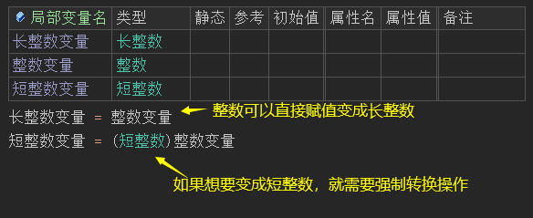
对象类：在火山中是所有类的最基础类(父类)。
1.2 数据类型的使用
1.2.1 使用方式
数据类型可以在类定义表的“基础类”中使用，也可以在变量、常量、参数定义表的“类型”中和方法中的“返回值类型”一栏中使用，如下图所示：
类型在填写时有以下注意事项：
1. 基础类中不允许提供基本数据类型。
2. 常量的类型只能为基本数据类型。
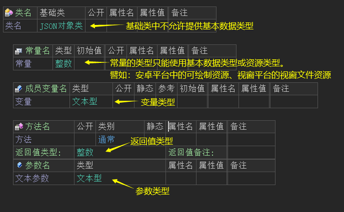
1.2.2 基本数据类型的输入字
在火山中基本数据类型除了使用全拼、首拼进行输入外，还提供了额外的输入字，如下所示：
字节：sbyte；
短整数：short；
字符：wchar；
整数：int；
变整数：vint；
长整数：long；
小数：double；
逻辑型：bool；
文本型：string。
如文本型的“string”输入“st”就可以将文本型提示出来。
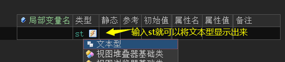
2、基本数据类型
2.1 字节
字节(有符号)是二进制数据的单位，在火山中基本数据类型之一，有效值范围从-128到127，占用1个字节空间。
如下图所示写法是错误的：
如果按照上图所写进行调试程序，最终会在火山输出栏提示如下错误：
2.2 短整数
短整数用于表达较短的整数值，有效值范围从-32768到32767，占用2个字节空间。
如果想要让短整数转换成整数或长整数，直接赋值即可，如下图：
2.3 整数
整数的有效值范围从-2147483648到2147483647，占用4个字节空间。
整数是处理和存储效率最高的数值数据类型，如果所欲处理的数值不包含小数部分，一般都使用本数据类型。
如果想要让整数转换成短整数需要进行强制转换操作，需要注意整数值的范围是否在短整数的范围之内，如下图所示：
整数想要转换成长整数，直接赋值即可：
2.4 长整数
长整数有效值范围从-9223372036854775808到9223372036854775807，占用8个字节空间。
在软件开发过程中，如果数值超过了整数范围，那就必须使用长整数类型。如果在你不确定数值范围是否会超过整数，例如：两个较大整数的相乘，结果可以使用长整数类型来表达。
长整数转换成整数或短整数需要进行强制转换，且必须保证在目标类型的范围值之内，如下图所示：
2.5 变整数
变整数主要提供给火山视窗平台使用，在编译64位程序时等效于长整数类型，编译32位程序时等效于整数类型。在火山安卓平台中固定等效于整数类型。
通常用作表达地址指针或句柄之类的本地数据，普通用户一般无需使用。
如下图所示：
在视窗平台中“取窗口句柄()”方法会返回变整数。
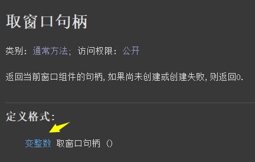
然后就可以定义变整数变量，去使用这个类型。
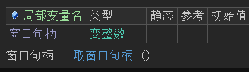
2.6 小数
双精度小数有效值范围从2.2250738585072014e-308到1.7976931348623158e+308（最长小数点后15位），占用8个字节空间。
小数数值也可以通过强制转换，转换成整数、短整数或长整数，但是会丢失精度，如下图所示：
将一个初始值为1.6小数变量强制转换成整数。
最终可以看到结果为1，小数部分的内容会全部丢失。
2.7 逻辑型
逻辑型是逻辑立即数的基本类型，也就是说有效值为“真”或“假”
在火山中，逻辑值也可以转换为文本格式，不同的平台表现方式不同，但都是使用“到文本()”进行转换。
2.7.1 火山视窗平台
当逻辑值以文本格式展示时：其中“1”表示“真”，“0”表示“假”，如下图所示，使用“到文本()”方法转换：
运行结果：
如果想要重新转换为逻辑值，可以使用“文本到逻辑值()”方法转换。
在“文本到逻辑值()”方法的帮助页中可以看到，只要参数提供“真”、“true”、“1”结果值都会返回真，其它任意文本都会返回假。
因此想要结果返回真，正确的方式就是从如下三个方法中选择其中一个即可。
2.7.2 火山安卓平台
当逻辑值以文本格式展示时：其中“true”表示“真”，“false”表示“假”，如下图所示，使用“到文本()”方法转换：
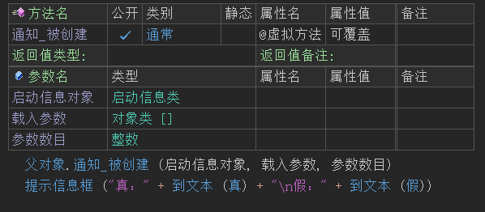
运行结果：
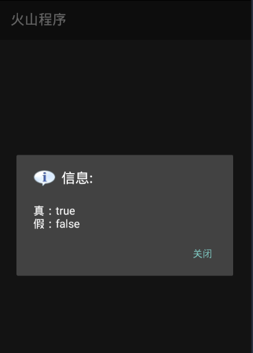
如果想要重新转换为逻辑值，使用“文本到逻辑值()”方法转换，本方法只能转换“true”为真，其它任意文本都会返回假。
如下图所示：
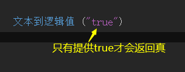
2.8 字符
宽字符有效值范围从0到65535，占用2个字节空间。字符主要指包括汉字、英文字母、英文数字、运标点符号等。
在火山中想要表达立即数字符，需要使用单引号''来操作，例如：'火'、'山'，字符也支持转义符，譬如'\n'。
注：火山平台使用Unicode-16(即双字节统一码)字符编码格式。
2.8.1 字符转整数
无论安卓还是视窗，都可以通过强制转换实现将字符转换成对应的整数值。
(1) 火山安卓平台
代码编写如下图：
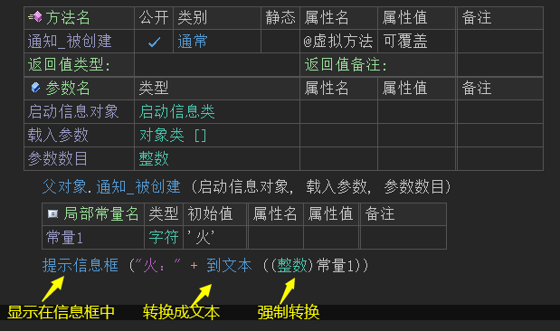
运行结果如下图：
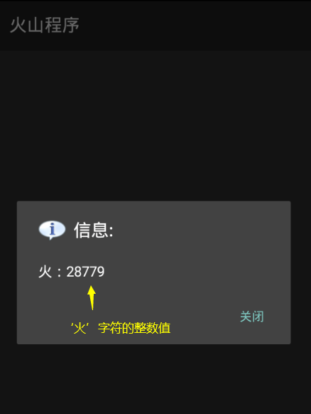
(2) 火山视窗平台
代码编写如下图：

运行结果如下图：

无论是视窗还是安卓平台的字符，它们的编码格式都是Unicode-16编码格式，因此转换成整数后都是一致的，不会存在任何差异问题。
2.8.2 整数转字符
当字符被转换成整数后，如果想要重新转换成字符也可通过强制转换进行操作。
(1) 火山安卓平台
代码编写如下图：
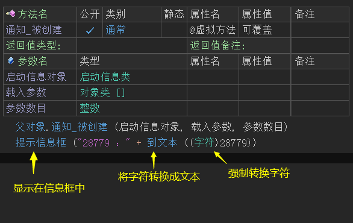
运行结果如下图：
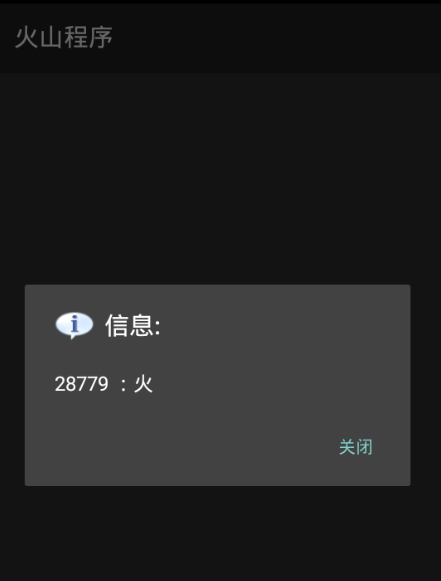
(2) 火山视窗平台
代码编写如下图：

运行结果如下图：

2.8.3 文本取字符
如果想要在一串文本中取出指定字符，火山安卓和火山视窗的处理方案不同，但原理基本一致。
(1) 火山安卓平台
在安卓中处理这个问题需要使用两个方法“文本到字符串()”和“取字符()”。
帮助文档如下图：
文本到字符串方法可以将文本转换成“字符串类”对象。
转换后的字符串类对象中，会有一个方法叫“取字符()”，通过此方法就可以将指定索引位置的文本取出转换成字符。
注意：字符位置从0开始，0代表第一个字符。
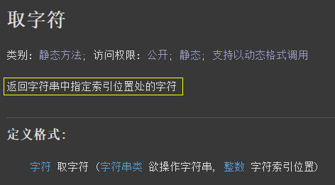
代码编写如下图：
因“文本到字符串()”方法返回的就是字符串对象，而“取字符()”方法又是字符串类中的方法。
因此可以将这两个方法直接结合起来使用，在代码中调用“文本到字符串().取字符()”就可以取出文本中指定位置的字符。
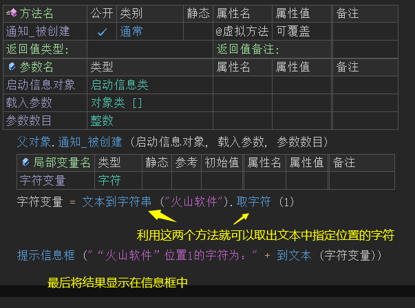
运行结果如下图：
最终可以看到指定位置的字符被取出。
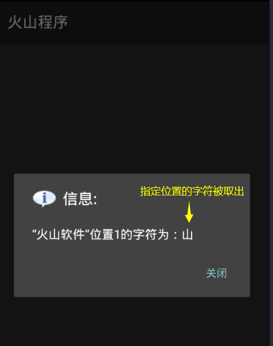
(2) 火山视窗平台
在火山视窗平台中就比较简单，直接调用“取字符()”方法就可以取出一串文本中指定位置的字符。
帮助文档如下图：
方法中提供了两个参数。
参数1：用于提供要取字符的文本。
参数2：提供索引位置值即可，位置从0开始。
代码编写如下图：
直接调用本方法提供对应参数就可以获取指定位置字符。
运行结果如下图：
最终可以看到指定位置的字符被取出。
2.9 文本型
文本型用作记录一段字符串文本，使用立即数表达时需要在文本的左右两边使用英文双引号括起来。
如下图所示：
文本型中支持\n、\t等转义符操作，具体可参考“字符串立即数”中的介绍。
如果需要将数值型数据转换成文本型，可以直接使用“到文本()”方法即可，重新转换会目标数值型则需要对应的“文本到XX()”系列方法。
如下图所示：
2.10 模板类型1~模板类型8
注意: 本类型普通用户知道即可，无需深入了解。
模板数据类型，只能在模板基础类中使用。
模板数据类型本身并不是真实存在的数据类型，所对应的真实数据类型需要由模板实现类来提供。
我们举个例子，假设我们需要开发一个数组操作类，用作支持对各种数组类型进行操作，如果不使用模板类型，那么我们需要写很多类似的类：
整数数组操作类、小数数组操作类、文本数组操作类等等……
而这些类的处理代码是完全一样的,唯一不同之处就是其所操作的数据类型不同，使用模板类型，我们可以把所有代码都放到模板基础类里面，然后定义对应的模板实现类即可。 如:
这样能大大减少工作量，也能让程序具有更好的可维护性(只需维护一处即可)。
对于火山普通用户而言，不需要深入了解如何具体定义这些模板类型，掌握如何使用已有模板类型即可。
假设有下面这段代码：
当你右键单击末语句行上的“插入”方法，然后选择查看其帮助菜单项后，看到帮助页面中参数部分为以下内容：
你一定会感到困惑，“模板类型1”和“模板类型2”所对应的真实数据类型到底是什么呢？
很简单，请继续单击该“模板类型1”/“模板类型2”链接，譬如点击前者将看到如下页面：
根据“变量1”的当前数据类型“整数到文本哈希表”，就可以得知，“模板类型1”当前所对应的真实数据类型为“整数”，这就是“插入”方法第一个参数提供的真实数据类型。
利用同样的方法，可以得知“插入”方法的第二个参数的实际类型为“文本型”。
由此可得出如下正确的调用代码：


3、基本数据类型扩展类与对象类
3.1 字节集类与字节数组
“字节集类”和“字节[]”都是“字节”基本数据类型的集合，用于表达二进制数据，不同之处为前者用于火山视窗平台，是火山类库中提供的一个数据类，后者用于火山安卓平台、是基本数据类型数组。
虽然名称不同，但本质上是一样的，例如将一个文件读入到火山程序中：
火山安卓平台：
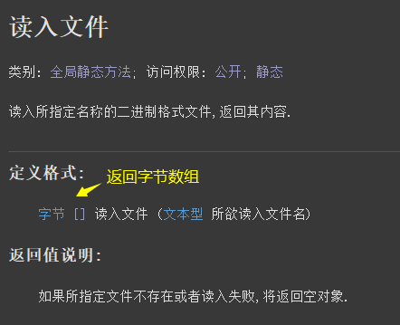
火山视窗平台：
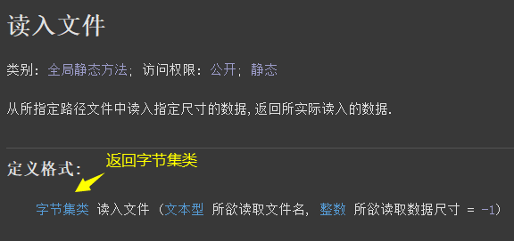
需要注意的是，如果将文本数据转换成二进制数据需要注意文本编码问题。
火山视窗中使用“文本到字节集()”转换出来的文本编码是“UTF-16LE”(也就是常说的Unicode编码，万国码)，火山安卓中使用“文本到字节数组()”转换出来的文本编码则是“UTF-8”编码。
例如：你的程序需要让安卓平台和视窗平台进行通讯，这个时候就需要注意文本编码问题，否则可能会乱码，如果没有特殊需求的话，推荐统一使用“UTF-8编码”。
即：
在火山安卓平台中，可以使用“文本到字节数组()”或“文本到指定编码字节数组()”转换成UTF8编码。
在火山视窗平台中，使用“文本到UTF8()”方法即可，注意第二个参数要设置为假。
如果想让火山安卓和视窗统一使用Unicode编码，可以如下操作：
在火山安卓平台中，可以使用“文本到指定编码字节数组()”转换，第二个参数提供“文本编码.小端UTF16”即可和火山视窗平台的默认编码一致。
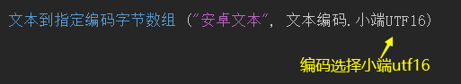
在火山视窗平台中，直接使用“文本到字节集()”方法即可。
常用字符集编码转换总结：
火山安卓平台：
1. 文本转换成字节数组：
(1) 文本到字节数组 ("")，将文本转换成UTF-8编码的字节数组。
(2) 文本到指定编码字节数组 ("", 文本编码.GBK)，将文本转换成GBK编码的字节数组。
(3) 文本到指定编码字节数组 ("", 文本编码.小端UTF16)，将文本转换成Unicode编码的字节数组。
2. 字节数组转换成文本：
(1) 字节数组到文本 (数组内容)，将UTF-8编码的字节数组重新转换成文本。
(2) 指定编码字节数组到文本 (数组内容, 文本编码.GBK)，将GBK编码的字节数组重新转换成文本，如果编码是GB2312，ANSI等多字节编码都可以使用GBK进行转换。
(3) 指定编码字节数组到文本 (数组内容, 文本编码.小端UTF16)，将Unicode编码的字节数组重新转换成文本。
火山视窗平台：
1. 文本转换成字节集类：
(1) 文本到UTF8 ("", 假)，将文本转换成UTF-8编码的字节集，如果要和火山安卓通讯参数2要设置为假。
(2) 文本到多字节 ("")，将文本转换成多字节编码字节集，常见的GBK，ANSI编码等都是多字节编码。
(3) 文本到字节集 ("")，将文本转换成Unicode编码的字节集。
2. 字节集类转换成文本：
(1) UTF8到文本 (字节集内容)，将UTF-8编码的字节集重新转换成文本。
(2) 多字节到文本 (字节集内容)，将多字节编码字节集重新转换成文本。
(3) 字节集到文本 (字节集内容)，将Unicode编码的字节集重新转换成文本。
3.2 基本数据类型包装类
所有基本类型包装类如下：
1. 字节类；
2. 短整数类；
3. 整数类；
4. 长整数类；
5. 变整数类(安卓平台无此类型)；
6. 小数类；
7. 字符类；
8. 逻辑型类；
9. 文本型类(视窗平台无此类型)；
这些包装类，在火山安卓平台中主要提供一些常用的基本类型操作方法，例如“取文本左边()”这个全局静态方法就是“文本型类”中的一个方法。
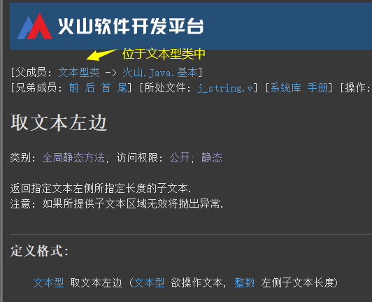
在火山视窗平台中，基本数据类型数据不支持以参考的方式传递到方法参数上，从而导致在被调用方法中不能以修改参数值的方式来对外返回基本数据类型数据。
这些包装类的作用就是为了方便上述操作。
如下所示：
打开“整数类”的帮助页，可以看到会存在一个名叫“值”的成员变量，而这个变量的类型就是“整数”。
如果你使用的是“长整数类”，那么这个变量的类型就是长整数。
“Ctrl+D”插入一个方法后，设置一个“整数类”的参数并赋值。
在窗口“创建完毕”事件下调用这个方法，定义“整数类”变量并传参，最后取出整数类中的值。
最终可以看到值被取出，也就间接实现了基本数据类型参数返回数据。
3.3 对象类
对象类是火山中所有类的最底层基础类，无论是自定义的类，还是火山系统库中的类，都会继承对象类。
安卓平台和视窗平台不同之处为对象类中的方法不一样，具体可看火山帮助页中的列出方法名称：
如下所示：
视窗平台：
安卓平台：
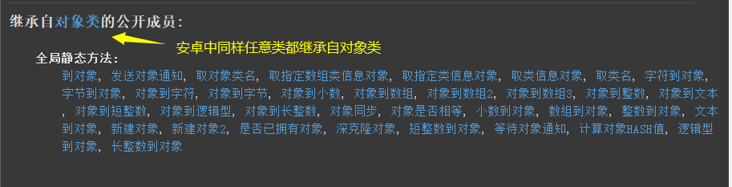
如果在实际开发过程中，遇到某个方法的参数是“对象类”，并且没有特别的注释，就代表这个参数可以提供任意的对象类数据进去。
例如：在火山视窗平台“对象数组类”的“加入成员()”方法就需要提供对象类的数据，本类为最基本的对象类数组。
如下所示：
如果想从对象数组类中取出对象，取出的数据是对象类，需要使用强制转换操作。
如下所示，必须保证强制转换的类型与添加时的类型一致：